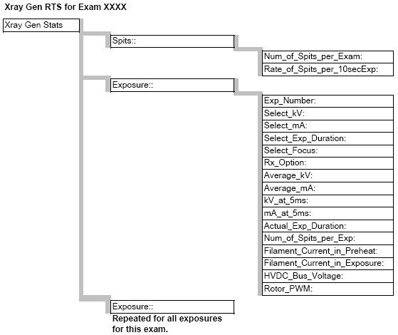

Operating Documentation
Direction 5181178-800, Rev# 16
BrightSpeed Select Service Methods Gen
Module Version 1.0, Version Date 2/16/07
Operating Documentation |
This document defines the available Real Time Statistics (RTS) data available on the system for the Xray Gen subsystem. The RTS data is sent by the JEDI to the ORP to the TGP and then to the host at the end of each exam.
The RTS viewer for the Xray Gen Stats shows a listing of information related to the Xray generator subsystem. See Illustration 1 for a pictorial view of the data to help in understanding the information seen.
Illustration 1: Pictorial view of RTS data

Table 1: RTS data example
| RTS (Real Time Statistics) Name | Data Example | Unit | Range | Explanation |
| Date: Wed Apr 7 08:12:51 2004 | Date/Time for this data set | |||
| ENDEXAM: ID 801 | Exam associated with this data set. | |||
| Spits:: | Header for Spit data for this exam | |||
| Num_of_Spits_per_Exam: | 0 | Total number of spits for this series of exposures (the entire exam). Tube spit count will force a scan abort under the following two conditions: > 20 spits in a 100ms window, >32 spits in a 1s window | ||
| Rate_of_Spits_per_10secExp: | 0 | Average spits per 10 seconds during this exam. Tube spit count will force a scan abort under the following two conditions: > 20 spits in a 100ms window, >32 spits in a 1s window | ||
| Exposure:: | Header for individual exposure data | |||
| Exp_Number: | 1 | Exposure number (An exam can consist of a series of exposures) | ||
| Select_kV: | 120 | Kv | Desired kV for this exposure | |
| Select_mA: | 80 | mA | Desired mA for this exposure | |
| Select_Exp_Duration: | 4280 | ms | Desired Exposure duration, in milliseconds | |
| Select_Focus: | 1 | flag | Focal spot selection 1:small,2:large | |
| Rx_Option: | 0 | flag | Prescription selection 0:normal,9:AutomA,12:EKGmodmA | |
| Average_kV: | 120 | Kv | ||
| Average_mA: | 80 | mA | ||
| kV_at_5ms: | 120.1999997 | Kv | kV at 5 milliseconds in the exposure. There is no specification on this measurement and as such no scan aborts can occur based on it. This measurement is used in the filament calibration process to determine calibration success | |
| mA_at_5ms: | 78.599998 | mA | mA at 5 milliseconds in the exposure. There is no specification on this measurement and as such no scan aborts can occur based on it. This measurement is used in the filament calibration process to determine calibration success | |
| Actual_Exp_Duration: | 4.080952 | sec | Actual exposure duration, +/- 5%. Exposure time is the duration that actual kV is within 75% of the selected value. | |
| Num_of_Spits_per_Exp: | 0 | count | Number of counted tube spits during this exposure. Tube spits are a characteristic of all functional x-ray tubes. However, mass quantities of tube spits are not. | |
| Filament_Current_in_Preheat: | 6214 | mA | Current present in tube filament just before the exposure. Filament heated corresponds to the focal spot selection. Standby: 1.8 - 3 A (nominal) Normal Operation: 3.5 - 7.5 A (normal operating range) Boost Range: 10 A (Maximum) | |
| Filament_Current_in_Exposure: | 6265 | mA | Current present in tube filament just before the exposure. Filament heated corresponds to the focal spot selection. Standby: 1.8 - 3 A (nominal) Normal Operation: 3.5 - 7.5 A (normal operating range) Boost Range: 10 A (Maximum) | |
| HVDC_Bus_Voltage: | 603 | V | Bus voltage just before the exposure end | |
| Rotor_PWM: | 498 | Volts DC_Bus | Voltage required to drive the x-ray tube anode. As friction is increased, more voltage is required at the stator to drive the anode. The minimum value for this is 480VDC. | |
| Exposure:: | Another exposure heading | |||
| Exp_Number: | 2 | count | Exposure number 2 statistics will follow. The data fields are the same as the previous exposure. Every exposure in the exam will appear in RTS, to a maximum of 300 exams. | |
| Data repeats for all subsequent exposures in this exam |